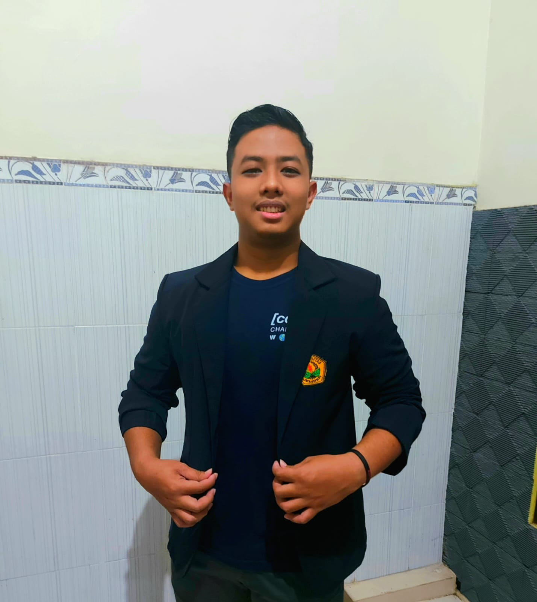

Akhmad Syauqillah Akmal
Tentang Saya
Saya dipanggil Akmal. Saya berasal dari Kota Lamongan. Saat ini saya sedang menjalani kuliah semester 5 di Fakultas Ilmu Komputer program studi Informatika Universitas Jember
Saat ini saya sedang menjalani kegiatan Studi Independen di Social Economic Accelerator Lab (SEAL)
Saya memiliki hobi di bidang otomotif
Saya mempunyai keinginan yaitu ingin menjadi seorang business analyst
Keahlian Saya
- Analisa Bisnis
- UI UX
Pendidikan Saya
- Universitas Jember (2020 - Sekarang)
- Ma Bilingual Sidoarjo (2017 - 2020)
- SMP Bilingual Sidoarjo (2014 - 2017)
- SDN Made 4 Lamongan (2008 - 2014)